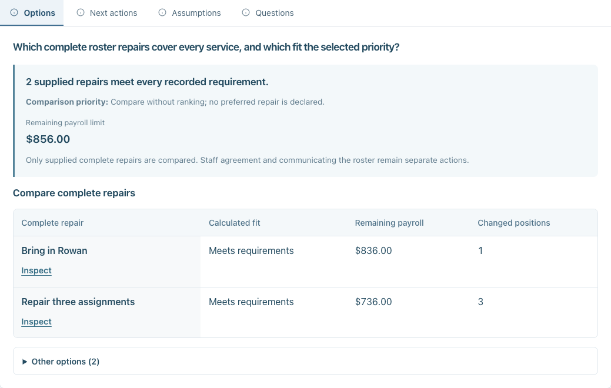
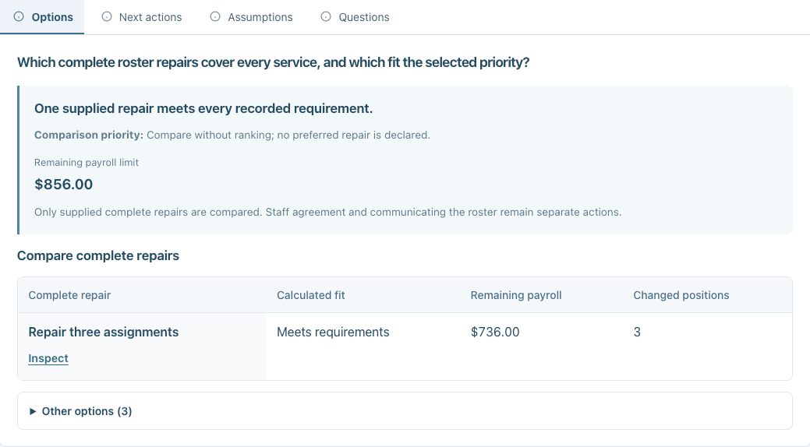

On Friday morning, Elena has a restaurant service to protect and a roster her team has already arranged their lives around. Nora calls out: she cannot work Saturday dinner. Reservations are booked. The kitchen still needs two qualified cooks from 6–10 p.m., alongside a server.
Elena could call her usual relief cook, ask the staff group chat or move someone from Sunday. Each could supply a name quickly. Her harder question is whether the resulting roster still works for every remaining recorded service, within the employee conditions and labor boundary.
Elena, the restaurant and the records are fictional. The worked case uses Repair a published restaurant roster 1.9.0 in Decision Lab’s Restaurant operations collection. It compares four supplied complete repairs within a configured roster; it does not generate every possible schedule. Open the workflow and follow the shared setup instructions.
Fill the gap without moving it somewhere else.
The question for this assessment is which of the four supplied complete repairs meets every recorded requirement? A qualified name in Saturday’s empty cell is only part of that answer. Elena needs to establish which complete proposals work before deciding what to prefer.
A complete arrangement here is a complete remaining roster: who fills each cooking and serving position, throughout its interval, across Friday dinner, Saturday dinner and Sunday lunch. Earlier work still matters to the recorded weekly-hours and rest limits.
The four supplied repairs range from leaving the gap to coordinating changes across Saturday and Sunday. The timeline shows where each leaves the work; the table records whether the complete roster passes.

The other six published positions stay unchanged in all four candidates. The calculation checks each complete candidate against role coverage, qualifications, full-interval availability, overlapping assignments, declared rest and hours, and remaining payroll. A filled cell alone cannot establish those findings.
| Complete repair | Recorded finding | Remaining payroll | Changed published positions |
|---|---|---|---|
| Leave the gap | Saturday dinner: one required cook position is unfilled. | $656 | 1 |
| Move Theo only | Sunday lunch: one required cook position is unfilled. | $656 | 2 |
| Bring in Rowan | Meets requirements | $836 | 1 |
| Repair three assignments | Meets requirements | $736 | 3 |
The $856 remaining-payroll limit leaves $200 beyond the $656 retained after Nora’s cancelled, unpaid shift is removed. That is the expense baseline used here. Meeting the limit does not settle which feasible repair Elena should prefer.
“Available” has to cover the whole assignment.
Now change one fact. Rowan can still start at 6 p.m., but must leave at 8 p.m. The proposed four-hour assignment is unchanged. So are the other employees, qualifications, requirements, pay quotes and candidate repairs.
Elena applies the shorter availability and recalculates. Until then, the earlier finding is outdated.
Rowan available until 10 p.m.
Relief and the coordinated repair both meet the requirements.


Rowan available until 8 p.m.
The relief repair fails; the coordinated repair remains feasible.


The relief repair fails the full-interval availability requirement: Rowan’s recorded window does not cover 8–10 p.m. Elena cannot count those two unavailable hours as cooking capacity. The coordinated repair remains feasible under the supplied facts.
Elena can seek revised availability or have another complete repair authored. Either needs another assessment. The calculation does not extend Rowan's availability or invent cover for the final two hours.
This is a qualified-staff allocation problem across time. The workflow applies the Complete a Commitment assessment pattern to each complete remaining roster: fixing Saturday must preserve the other recorded obligations.
Elena has alternatives she can explain.
With Rowan available until 10 p.m., Elena has two feasible supplied repairs. With Rowan available only until 8 p.m., she has one. The requirement to cover the entire shift stays fixed; Rowan’s shorter availability changes which proposals Elena can take to the team.
These feasibility-only calculations deliberately establish no preferred repair. With full availability restored, Elena still has a business choice: pay more to preserve the other published assignments, or make the cheaper coordinated changes. Follow how an explicit priority changes which repair is preferred.
In the shorter-availability situation, Elena takes the coordinated repair to Theo, Ben and Ava. She can explain who would move, which services remain covered and why Rowan’s shorter window cannot cover Saturday. She still needs their agreement and must communicate any resulting roster through the restaurant’s normal process. If those conversations change the recorded availability or proposed assignments, she updates the inputs and recalculates.
That resolves the immediate analysis: Elena has a complete supported proposal, including its consequences for Sunday. A passing calculation has not made the staffing commitment on anyone’s behalf.